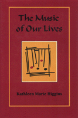

Music as "a means of exploring the wealth of our ethical world"
Music as "a means of exploring the wealth of our ethical world"


 Music as "a means of exploring the wealth of our ethical world"
Music as "a means of exploring the wealth of our ethical world"

|  |
The Music of Our LivesKathleen Marie Higginscloth EAN: 978-0-87722-756-4 (ISBN: 0-87722-756-X) |
Philadelphia Book Clinic Certificate of Award, 1991
The world�s philosophical traditions have often treated music as a central tool for promoting harmonious living for both society and the individual. But this idea has been forgotten by Western philosophy, as well as by much of American society at large. Kathleen Higgins defends the view that music has much to offer our ethical lives and reflection. Writing as a philosopher, her accessible and wide-ranging defense of the connection between music and human character and behavior is an indictment of the current trend in musical aesthetics: the abstract analysis of music solely in terms of its form. "Music is a means of exploring the wealth of our ethical world," she protests. She charges that the dominance of aesthetic formalism neglects the richness of aesthetic experience and she explains how it has contributed to the abandonment of the idea that music has an ethical dimension.
Higgins believes that American philosophical thought has lost a great deal through its obsession with topical distinctions and moral dilemmas. "As a society," she observes, "we consider our everyday lives as virtually immune to transformative aesthetic experience.... Conservatism, ethnocentrism, divorce from experience characterize the now established philosophical approach to music." To counter this "impoverishment," the author considers some of the symbolic roles that music has served in various societies and looks to the diversity and abundance of music in modern American culture for examples of benign models for ethical behavior.
Stating that ethics is concerned with "thought-mediated human behavior," Higgins approaches the subject as an inquiry into living well and getting along with others and she investigates ways in which music can further this reflection. While philosophers in general see music as abstract and formal, Higgins views music as concrete, substantive, and particular. Not limiting her examples to European "classical" music, she considers other forms, such as ethnic music and jazz, that are not usually subjected to philosophical analysis. Describing the jazz solo as an example of interaction between the individual and group or the minority and majority populations in a community, she proposes that the "model of harmony and counterpoint here provides us with a far more appealing resolution to our most serious social problems than the usual statistic-mongering, policymaking, and politicking."
Attention to musical experience suggests a different central model for ethics instead of the moral dilemma. In her persuasive yet controversial thesis, Higgins argues that "music�s capacity to engage our intellectual, emotional, and physical natures simultaneously, its suitability for promoting social cohesion, its reflection of practical and ideal modes of human social interaction, its ability to stimulate reflections regarding our basic values" are essential features of musical experience. Maintaining that music reveals the possibility of coherent and dynamic conceptions of our ethical situation, she submits that "music is a better model for human life."
Acknowledgments
Introduction
1. Music "in Itself": Its Development and Status
2. The Many Faces of Form
3. Music and Emotions: The History
4. Music and Emotions: Theories, Problems, and Suggestions
5. The Ethical Aspects of Music: Music as Influence and Educator
6. The Ethical Aspects of Music: Music as Metaphor, Symbol, and Model
7. How Music Can Assist Philosophical Ethics
Notes
Bibliography
Index
 | Kathleen Marie Higgins, Associate Professor of Philosophy at the University of Texas at Austin, is the author of Nietzsche's Zarathustra (Temple). |
Philosophy and Ethics
Music and Dance
© 2015 Temple University. All Rights Reserved. This page: http://www.temple.edu/tempress/titles/666_reg.html.